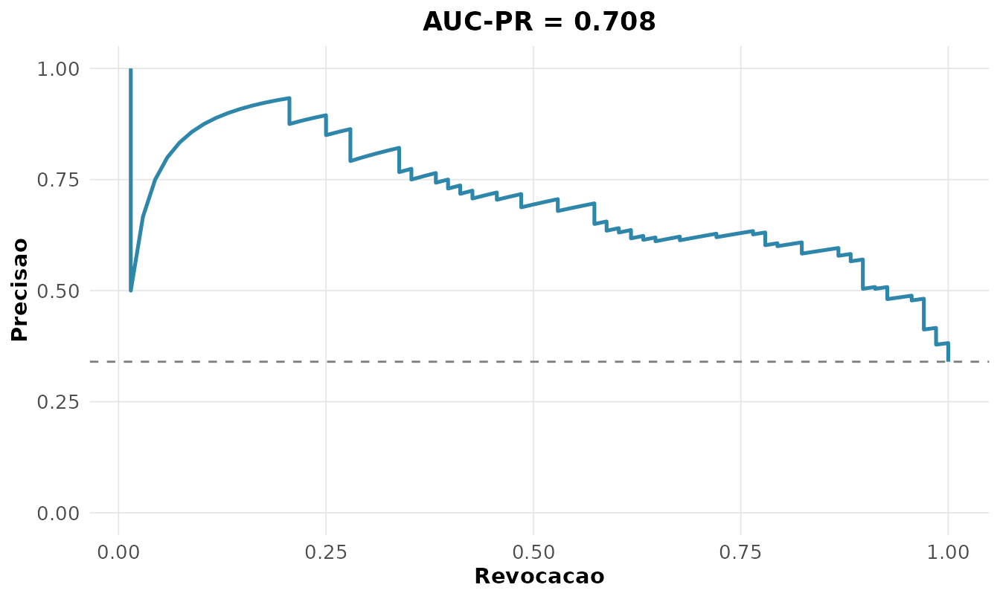

Treinar um modelo é metade do trabalho; a outra é
avaliá-lo com a métrica certa. Acurácia sozinha engana
em problemas desbalanceados, e um modelo pode discriminar bem mas estar
mal calibrado (Kuhn and Johnson
2013). Esta vinheta percorre as ferramentas de avaliação usando
MASS::Pima.tr (diagnóstico de diabetes), com um modelo
completo e um reduzido.
pima <- MASS::Pima.tr
m_completo <- glm(type ~ glu + bmi + age, pima, family = binomial())
m_reduzido <- glm(type ~ glu, pima, family = binomial())
p1 <- predict(m_completo, type = "response")
p2 <- predict(m_reduzido, type = "response")
pred <- factor(ifelse(p1 > 0.5, "Yes", "No"), levels = c("No", "Yes"))Métricas de classificação
A partir da matriz de confusão (VP, FP, FN, VN) derivam-se várias métricas, cada uma respondendo a uma pergunta:
rnp_metricas_classificacao(pima$type, pred, positivo = "Yes")
#> # A tibble: 8 × 2
#> metrica valor
#> <chr> <dbl>
#> 1 acuracia 0.76
#> 2 precisao 0.672
#> 3 revocacao 0.574
#> 4 especificidade 0.856
#> 5 f1 0.619
#> 6 f_beta 0.619
#> 7 mcc 0.448
#> 8 acuracia_balanceada 0.715A acurácia (0,76) parece boa, mas a revocação de 0,57 revela que o modelo deixa escapar 43% dos diabéticos — crítico em contexto clínico. O MCC (coeficiente de Matthews, 0,45) resume o acerto considerando todas as células da matriz, robusto ao desbalanceamento.
Escore de Brier e calibração
O escore de Brier mede o erro quadrático das probabilidades, — quanto menor, melhor:
rnp_brier(pima$type, p1, positivo = "Yes")
#> # A tibble: 1 × 3
#> brier brier_referencia escore_habilidade
#> <dbl> <dbl> <dbl>
#> 1 0.156 0.224 0.305O escore de habilidade (0,30) indica 30% de redução do erro em relação a prever simplesmente a prevalência. Já a calibração verifica se uma probabilidade predita de 0,7 corresponde a ~70% de eventos observados, testada por Hosmer-Lemeshow:
rnp_calibracao(pima$type, p1, positivo = "Yes")$hosmer_lemeshow
#> # A tibble: 1 × 3
#> estatistica gl p_valor
#> <dbl> <int> <dbl>
#> 1 11.7 8 0.163Com , não se rejeita boa calibração: as probabilidades são confiáveis.
Separação: KS e precisão-revocação
A estatística KS mede a máxima separação entre as distribuições de escore das duas classes:
rnp_ks_classificador(pima$type, p1, positivo = "Yes")$ks
#> [1] 0.5646Um KS de 0,56 indica boa separação. Em dados desbalanceados, a curva precisão-revocação é mais informativa que a ROC; sua área (AUC-PR) resume o desempenho:
rnp_curva_precisao_revocacao(pima$type, p1, positivo = "Yes")$grafico
Comparando dois modelos: teste de DeLong
As curvas ROC dos dois modelos podem ser comparadas formalmente. O teste de DeLong avalia se a diferença entre as AUCs é significativa, levando em conta a correlação por serem avaliadas nos mesmos indivíduos:
rnp_comparar_roc(pima$type, p1, p2, positivo = "Yes")
#> # A tibble: 1 × 5
#> auc1 auc2 diferenca z p_valor
#> <dbl> <dbl> <dbl> <dbl> <dbl>
#> 1 0.836 0.789 0.0465 2.28 0.0226O modelo completo (AUC ) supera o que usa apenas glicose (AUC ), e a diferença é significativa (): incluir IMC e idade melhora a discriminação de forma não atribuível ao acaso.
Avaliação de teste diagnóstico
Em contexto clínico, importam as razões de verossimilhança, que independem da prevalência: e .
rnp_acuracia_diagnostica(pima$type, pred, positivo = "Yes")
#> # A tibble: 8 × 2
#> metrica valor
#> <chr> <dbl>
#> 1 sensibilidade 0.574
#> 2 especificidade 0.856
#> 3 vpp 0.672
#> 4 vpn 0.796
#> 5 razao_veross_pos 3.98
#> 6 razao_veross_neg 0.498
#> 7 acuracia 0.76
#> 8 prevalencia 0.34Uma de 4,0 significa que um resultado positivo é 4 vezes mais provável em quem tem a doença — multiplicando as chances a priori, conecta-se diretamente ao Teorema de Bayes da vinheta 2.
E para regressão?
Quando a resposta é contínua, as métricas mudam: o RMSE penaliza erros grandes (mesma unidade da resposta), o MAE é mais robusto, o MAPE dá o erro percentual e o R² mede a variância explicada:
fit <- lm(medv ~ rm + lstat, data = MASS::Boston)
rnp_metricas_regressao(MASS::Boston$medv, fitted(fit))
#> # A tibble: 5 × 2
#> metrica valor
#> <chr> <dbl>
#> 1 rmse 5.52
#> 2 mae 3.95
#> 3 mape 20.8
#> 4 r2 0.639
#> 5 rmse_relativo 0.245O RMSE de 5,5 (mil dólares) e o MAPE de 21% quantificam o erro típico do modelo de preços. Como em classificação, nenhuma métrica isolada basta — RMSE e MAE contam histórias diferentes quando há outliers.
Síntese
| Pergunta | Função | Métrica |
|---|---|---|
| Quão certo acerta? | rnp_metricas_classificacao |
acurácia, F1, MCC |
| Erro de regressão? | rnp_metricas_regressao |
RMSE, MAE, R² |
| Probabilidades confiáveis? |
rnp_calibracao, rnp_brier
|
Hosmer-Lemeshow, Brier |
| Quão bem separa? |
rnp_ks_classificador,
rnp_curva_precisao_revocacao
|
KS, AUC-PR |
| Um modelo é melhor? | rnp_comparar_roc |
DeLong |
| Uso clínico? | rnp_acuracia_diagnostica |
sens., espec., RV |
Nenhuma métrica isolada conta a história toda: a escolha depende do custo dos erros e do equilíbrio das classes.
Exercícios
Resolva com o rnp, usando MASS::Pima.tr,
MASS::Boston e mtcars. Para os
classificadores, gere as probabilidades com
glm(..., family = binomial()).
- Ajuste
type ~ glu + bmi + ageemMASS::Pima.tre calcule todas as métricas de classificação para o limiar 0,5 (rnp_metricas_classificacao). - Compare o F1 com a acurácia: por que diferem em dados desbalanceados?
- Calcule o escore de Brier e o escore de habilidade do modelo
(
rnp_brier). - Avalie a calibração com o teste de Hosmer-Lemeshow
(
rnp_calibracao). - Calcule a estatística KS de separação
(
rnp_ks_classificador). - Construa a curva precisão-revocação e obtenha a AUC-PR
(
rnp_curva_precisao_revocacao). - Construa as curvas de lift e de ganho acumulado
(
rnp_curva_lift,rnp_curva_ganho). - Compare, pelo teste de DeLong, o modelo completo com um que usa só
glu(rnp_comparar_roc). - Calcule a sensibilidade, a especificidade e as razões de
verossimilhança (
rnp_acuracia_diagnostica). - Ajuste
medv ~ rm + lstatemMASS::Bostone calcule RMSE, MAE, MAPE e R² (rnp_metricas_regressao). - Compare as métricas de regressão entre um modelo simples e um múltiplo.
- Insira um outlier na resposta e observe o impacto sobre RMSE versus MAE.
- Construa a matriz de custo para um classificador em que o falso
negativo custa o triplo do falso positivo
(
rnp_matriz_custo).